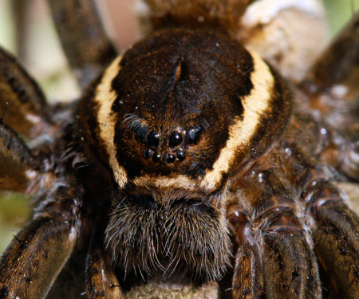
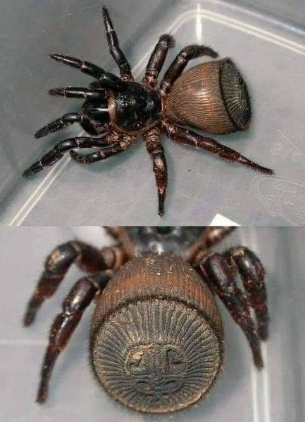
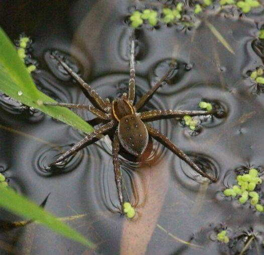

Anatomy

Cephalothorax
This is the combined head and thorax, where the eyes, mouthparts (chelicerae), and legs are attached.

Abdomen
Contains the spinnerets that produce silk, along with the reproductive organs and other vital systems.

Eyes
Most spiders have multiple simple eyes that can detect light and movement.

Legs
Spiders have eight legs, each consisting of seven segments. The legs are adapted for various functions, such as walking, jumping, or feeling their environment.